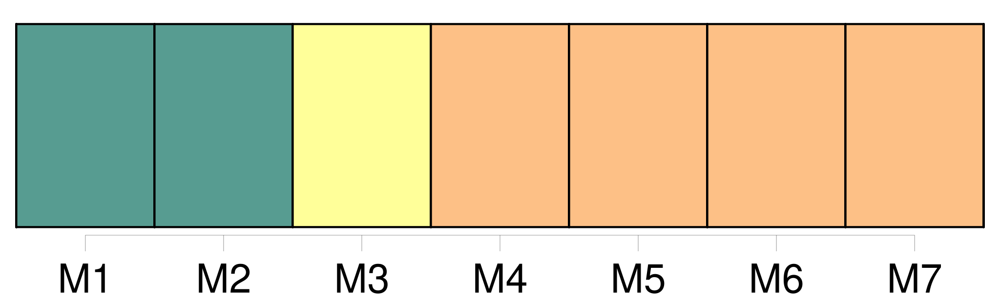
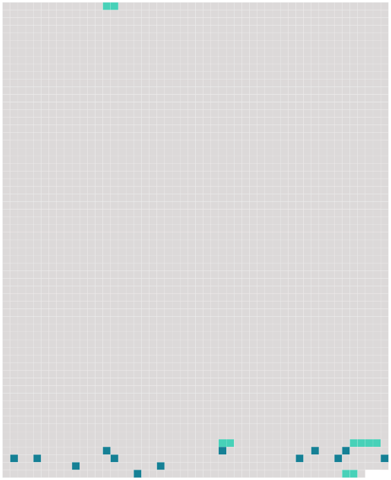

Longueur nb maillons : 17 mentions |
  |
Tout le monde te souhaite bien de l'ennui, à commencer par [MMe Denis] [124 phrases]
» [1 phrases] Vous [me] dites que vous êtes libre présentement, et qu'il ne tient qu'à [moi] de disposer une seconde fois de votre sort. Assurément si [je] le pouvais, [je] vous prierais de vous rapprocher de [moi] , mais [je] suis encore comme l'oiseau sur la branche …… [Je] ne sais ce que le patron veut faire. Il parle de vendre Ferney, ensuite de ne le pas vendre, enfin [j'] attends ses volontés …… [J'] ai grande envie, si [je] reste ici, d'y vivre en philosophe. [J'] ai tant vu le soleil, qu'à la fin [je] vois qu'il n'y a qu'une société douce qui puisse amuser et occuper un être raisonnable. [2 phrases] Vous devriez venir le passer à Paris, [je] serais comblée de joie ……
» |
 |
La ressource peut être téléchargée sur la page Ortolang
Si vous avez des questions ou vous voyez des erreurs, merci d'envoyer un mail à silvia.federzoni89@gmail.com
Site développé par S. Federzoni (contact)